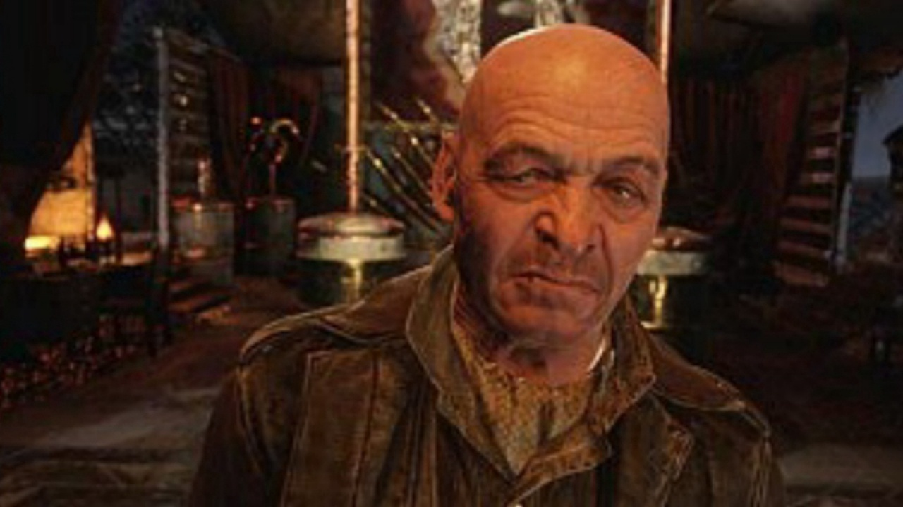
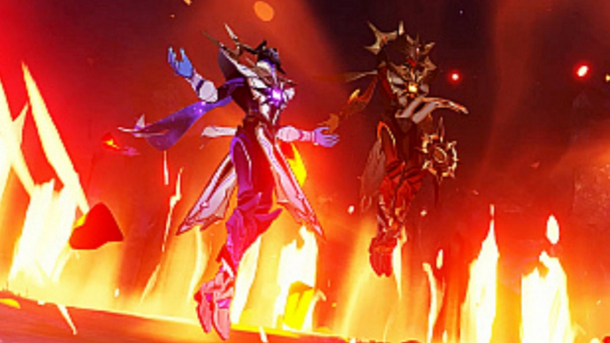
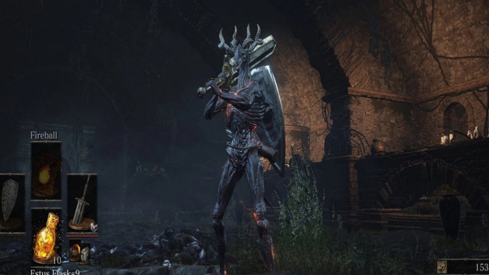

На локации «Каспий» в Metro Exodus нужно будет уничтожить Барона. Есть одна небольшая проблема — в этом месте можно найти два Барона!
Прохождение Dark Souls 2 — очень непростая задача. В этой статье мы раскроем несколько полезных секретов
Вместе с обновлением 2.6 в Genshin Impact был добавлен новый регион — «Разлом». Так как локация оказалась довольно большая, чтобы разнообразить её исследование, вы можете выполнять различные задания мира.
Реактивными ранцами едва ли удивишь бывалого игрока: последний раз они появлялись на карте несколько сезонов назад, да и внутри некоторых творческих карт они даются по умолчанию.
С недавним релизом Hollow Knight: Silksong о Полом рыцаре стали вспоминать все чаще. Хотя Силксонг еще не вышла - не сложно предугадать, что принципы и концепция игры в целом останутся прежними.
Вы знали, что в Dark Souls 3 вы можете превращаться в дракона? Теперь знаете, и сегодня мы поговорим о том, что вам потребуется для этого и как осуществлять превращение.
Самые эффективные сборки для Довакина, которые подойдут как новичкам, так и опытным игрокам.